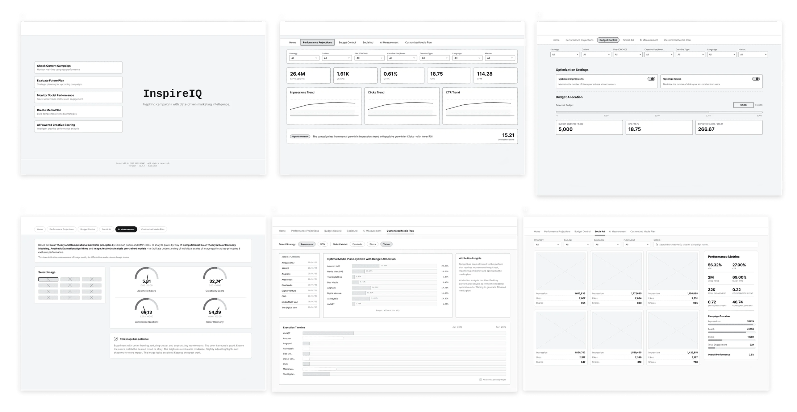
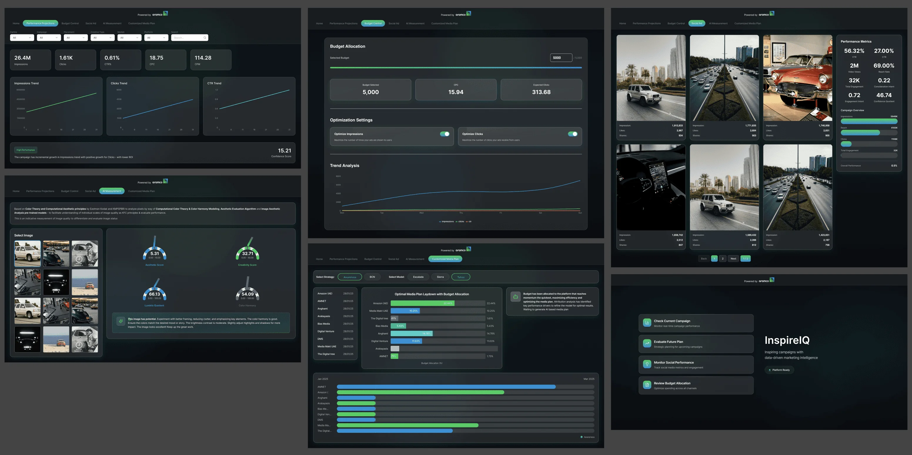

Reducing engineering overhead at the design stage

Overview
An internal analytics dashboard built for Aramco's marketing team, giving stakeholders visibility into campaign performance. The brief looked straightforward on paper. The real problem wasn't the screens, it was everything that had to be figured out before any screen could exist.
Impact snapshot
The solution
A look at the final design before we get into how it came together.
Discovery
Interviewed the Aramco team who'd actually be using the dashboard day to day, understanding how they currently tracked performance, what they were missing, and what decisions the data needed to support. Ran that alongside conversations with client services and the data team internally, translating a broad ask into specific, prioritized requirements. Mapped engineering's platform constraints and technical limitations in parallel, so the direction being designed was grounded in what could actually ship, not built on assumptions that would break in handoff.
Mapping the flow
Once requirements and constraints were clear, the flow got mapped before any visual direction began. This wireframe went through several rounds of review with both the Aramco team and engineering before moving to high fidelity.

Key decisions
With wireframes approved, two decisions shaped everything that followed.
Scoping an AI assisted build pipeline
Initial builds in Claude Code, refinement in Figma, tested directly with the Aramco team, then a final fully interactive build back in Claude Code, specifically to collapse the handoff gap between design and engineering rather than to use AI for its own sake.

A rejected dark mode direction
An early concept explored dark mode for the dashboard, which tested well visually. It was dropped, not for aesthetic reasons, but because Aramco didn't want to risk echoing a tone associated with negative global brand perception. Brand judgment overrode a design preference that had no data against it.

Validation
Before anything went live, the interactive build was tested directly with the Aramco team using task based sessions, watching how they navigated the dashboard in practice rather than asking how they thought they'd use it. Each session surfaced friction points and open questions, which fed straight back into the design. It took a few rounds of testing and iteration to reach a version the team could rely on with confidence, and that was the bar for shipping, not a deadline.
Impact
59% reduction in front end engineering overhead, sourced from finance's own hours and billing data on the account. 70% faster end to end delivery, based on the Group Account Director's estimate against a comparable traditional handoff timeline.
Key learnings
The biggest gain here didn't come from a better interface. It came from treating requirements gathering, engineering constraints, and flow mapping as part of the design work itself, not a phase to move past quickly, and from owning the build pipeline as a design decision, not just an execution detail.